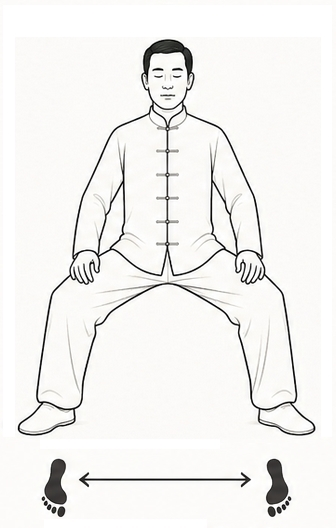

Les premières bases du Qi Gong
|
|||||||
 |
* Pieds écartés plus largement que les épaules * Pointes des pieds légèrement ouvertes * Genoux fléchis, comme en position assise * Bassin droit et stable * Mains sur les cuisses ou devant dan tian, une paume sur l'autre * Respiration profonde et régulière + Enracinement, stabilité et force tranquille |
||||||
| En cliquant sur le pratiquant vous passez d'une vue de face à une vue de profil |
|||||||